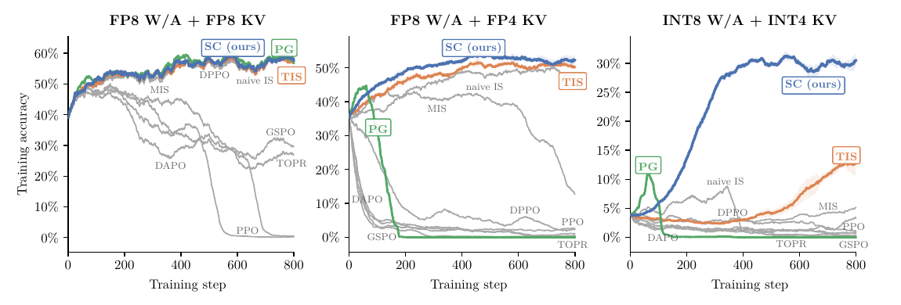
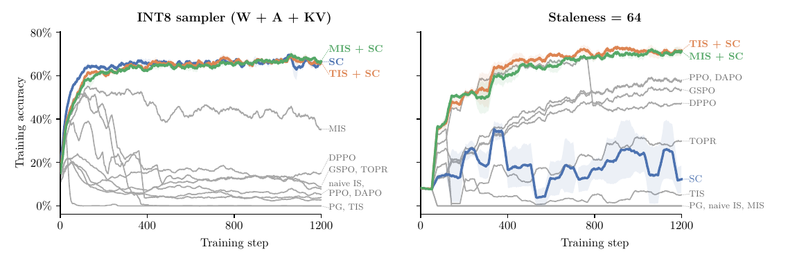

Score Centering: Cancelling Drift to Stabilize LLM RL under Training–Inference Mismatch
TL;DR
- Martin Marek and Max Ryabinin (Together AI; arXiv 2609.20807) explain why RL on LLMs collapses under tiny training–inference mismatch (TIM) while SFT on wildly off-policy data is fine: under TIM the expected policy-gradient update at every prefix splits into a signal term (the covariance of reward and score) and a drift term \( \mathbb{E}_q[R]\,\bar{s} \), and the drift is a cross-entropy gradient that distils the trainer toward the sampler. Because the sampler is a biased copy of the trainer that is re-synced every step, the bias compounds in a feedback loop.
- The fix is one additive, hyperparameter-free line: subtract the expected score under the sampler from every token's score, \( \tilde{s}_{y_t} = s_{y_t} - \bar{s} \). The centered score has zero mean under the sampler by construction, so drift is cancelled exactly at every prefix with no importance ratios, no clipping and no masking; on-policy it is a no-op. In practice the expectation needs only the sampler's top-\( k \) logprobs (\( k = 128 \) or even 32) and can be written as a scalar loss.
- On Qwen3-0.6B/1.7B Countdown and Qwen3-30B-A3B-Base on INTELLECT-2 math, score centering (SC) matches truncated/masked importance sampling under mild mismatch and is the only method that survives severe quantization (INT8 weights/activations + INT4 KV cache: SC 30%, TIS 12%, everything else < 5%). Under severe staleness (sampler refreshed every 64 steps) SC alone is not enough but SC composed with TIS or MIS beats every pure-IS baseline.
Why this matters
Every serious RL stack this tracker follows — async rollouts, quantized samplers, disaggregated engines, linear-attention kernels that never match bitwise — pays a mismatch tax, and the standard toolkit is a grid of importance-sampling patches (TIS, MIS, IcePop, GSPO, DPPO, TOPR…) that differ only in where they clip or mask the ratio. Two prior tracker entries took the opposite route of eliminating mismatch by engineering bitwise parity (Gated DeltaNet train/inference parity; the linear-attention numeric-mismatch blog). This paper gives the first crisp mechanistic account of what mismatch does to the gradient, and the account predicts both when parity work is worth it and why the clipped-IS grid fails under quantization: clipping reintroduces drift.
The distillation framing is the part worth internalizing. Online RL with all-positive rewards under TIM is on-policy distillation from a moving teacher — the trainer fits successful rollouts from a slightly different copy of itself and then becomes that copy. That is exactly the setting the on-policy-distillation line in this tracker studies, and it explains the stability asymmetry: distilling toward a fixed teacher converges to a maximum-likelihood fit; distilling toward a teacher that tracks you diverges. "What matters is not the size of the mismatch, but whether the teacher is fixed or tracks the student."
The core idea
Start from the policy gradient with rollouts from the trainer \( p_\theta \):
where \( R \) is the reward (or advantage) of rollout \( y \). In practice rollouts come from a sampler \( q_\theta \neq p_\theta \). Write \( s_{y_t} = \nabla_\theta \log p_\theta(y_t \mid y_{<t}) \) for a token's score and \( \bar{s} = \mathbb{E}_{q}[s_{y_t}] = \sum_v q_v \nabla_\theta \log p_v \) for its expectation under the sampler at that prefix. On-policy, \( \bar{s} = \nabla_\theta \sum_v p_v = 0 \) for any distribution, so a constant reward produces no update. Off-policy it does not vanish, and the covariance identity splits the expected per-prefix update into two pieces:
Only the covariance sees which token led to which reward. The drift depends on rewards only through their prefix-mean and points along \( \bar{s} \), the negative gradient of the cross-entropy loss with the sampler as teacher — so vanilla PG distils toward the sampler at every prefix, scaled by expected reward there. Group centering (GRPO-style) does not remove it: advantages sum to zero over a prompt's rollouts, but the expected advantage at a given prefix is positive after good prefixes and negative after bad ones, which is precisely where the learning signal lives.
Score centering replaces each score by its centered version,
which is the on-policy update except that the covariance is measured under \( q \) rather than \( p \). The correction is deterministic given the prefix (it does not depend on the sampled token), exact, and orthogonal to importance sampling, so the two compose. It is a bias correction, not a variance reduction: on-policy a reward baseline changes variance but not the mean, whereas off-policy the subtracted vector shifts the mean; an exact value-function baseline would cancel drift too, and score centering gets the same expected update without a critic.

Figure 1 from the paper: training accuracy on INTELLECT-2 math for Qwen3-30B-A3B-Base with an FP8 sampler (left), FP8 weights/activations + FP4 KV cache (middle), and INT8 weights/activations + INT4 KV cache (right). Naive policy gradient (green) is fine under mild mismatch and collapses as it grows; score centering (blue) is the only rule still learning in the rightmost panel.How it works
Storing the sampler's full next-token distribution is too expensive, so the implementation logs the sampler's top-\( k \) logprobs \( H \) and models the tail with the trainer's distribution rescaled to the sampler's tail mass. This gives a scalar loss whose gradient is the centered-score update:
where \( \rho \) is the ratio of sampler to trainer tail mass outside \( H \) and \( \operatorname{sg} \) is stop-gradient. Using \( k = 128 \) or \( k = 32 \) matched full-vocabulary centering in every tested setting.
# score-centering loss for one token (paraphrase of the paper's JAX snippet)
inputs: train_logp[V] # trainer log-probs at this prefix
samp_logp[k], topk_ids[k] # sampler top-k log-probs and ids
y_t, A # sampled token, advantage
head_train = train_logp[topk_ids]
rho = (1 - sum(exp(samp_logp))) / (1 - sum(exp(head_train))) # tail-mass ratio
resid = exp(samp_logp) - rho * exp(head_train) # q_v - rho p_v on the head
resid = stop_gradient(resid)
correction = sum(resid * head_train) # sum_v sg[q_v - rho p_v] log p_v
loss = -A * (train_logp[y_t] - correction)
# gradient of -loss wrt theta == A * (s_{y_t} - s_bar) with s_bar estimated from top-k
# compose with IS: multiply the first term by the (clipped) ratio, keep the correction additive
Two things to notice. First, the correction is the same for every token sampled at that prefix; it is a property of the prefix, not the sample. Second, there is nothing to tune — no clip threshold, no mask region — and when \( q = p \) the residual is zero.
Results
Diagnosis (Figure 2). Qwen3-1.7B on Countdown with the sampler's weights perturbed by fixed Gaussian noise. Fully offline training is stable only with \( +1/0 \) rewards (negative rewards are unbounded and collapse, as Ren & Sutherland argued). Fully online training under TIM is the mirror image: \( +1/0 \) rewards are the least stable, group-centered rewards the most. That asymmetry is the fingerprint of drift — all-positive rewards maximize \( \mathbb{E}_q[R] \), the drift coefficient.
Weight noise (Figure 3). Qwen3-0.6B, three noise scales, all methods on a shared REINFORCE-with-group-centering objective so only the correction rule differs. SC, TIS and MIS plus their compositions do best; under the largest noise only SC and SC+TIS/MIS train stably. Collapse times shrink with mismatch (DPPO at ~160/80/20 steps; TIS stable, ~180, ~40), which is what accumulating drift predicts.
Quantization vs staleness (Figure 4). With an INT8 sampler (weights, activations, KV), SC alone and composed are best. With the sampler refreshed only every 64 steps, SC alone is mediocre and SC+TIS / SC+MIS dominate — the residual mismatch is now the covariance being measured under \( q \), which IS partially fixes. PPO and DAPO survive staleness but collapse under quantization and noise: their clip is designed for ratios produced by policy movement, not numerical error.

Figure 4 from the paper: left, INT8 sampler (weights + activations + KV) — SC, MIS+SC and TIS+SC all train stably while every pure-IS rule degrades; right, sampler updated every 64 steps — the compositions win, SC alone (blue) lags.30B scale (Figure 1). Qwen3-30B-A3B-Base on INTELLECT-2 math, 800 steps. FP8 sampler: even uncorrected PG is stable (~58% train accuracy). FP8 + FP4 KV: PG collapses within 200 steps, MIS collapses late, SC reaches 52% and TIS 51%. INT8 + INT4 KV: SC 30%, TIS 12%, all others below 5%. Expert routing was not replayed for this MoE, so router disagreement is part of the mismatch. Experiments ran on 8×H100 nodes; seeds and compute per curve are tabulated.
How it connects
- Bitwise Train–Inference Parity for Gated DeltaNet and Training–Inference Numeric Mismatch in RL with Linear Attention (both tracked, RL) — the "eliminate TIM" route. This paper's position is that full parity is too expensive in rollout throughput and that drift, not mismatch magnitude, is what needs cancelling; the two lines are complementary — parity where cheap, centering where not.
- PNPO: rollout reuse under policy lag and Selective Importance Sampling (tracked) — members of the IS grid that score centering composes with; the staleness result says you still want one of them when the trainer moves far between syncs.
- FlashREINFORCE (tracked) and GLM-5.3's SAO asynchronous RL (tracked) — async, critic-free training is exactly where staleness and quantized samplers show up together; SC+TIS is the paper's recommended recipe for that regime.
- On-Policy Distillation Isn't a Free Lunch (MOPD) and the OPD survey — the drift term is on-policy distillation toward the sampler. The fixed-vs-tracking-teacher distinction here is a useful lens on why OPD from a frozen teacher is stable while self-distillation loops can wander.
- Why Quantized Reasoning Models Hesitate (Meta, tracked) — quantization changes token-level behaviour; this paper shows what that does when the quantized model is your sampler.
Critical take
The theory is clean and the diagnosis is convincing, but the headline experiments deliberately amplify mismatch (weight noise, INT4 KV, refresh-every-64-steps) on short sequences as a proxy for long runs under mild mismatch. The authors say they could not find natural settings where the best methods separate within hours of GPU time, which is honest and also means the practical delta between SC and a well-tuned TIS at production-scale, FP8, modest-staleness training is not measured here. Under the mildest 30B setting, uncorrected PG was fine.
Score centering cancels the drift but leaves the covariance measured under \( q \); the staleness experiment shows that residual can matter, and the recommendation ("compose with IS when the trainer moves far") re-introduces a clipped ratio and its hyperparameters through the back door. The method also has an infrastructure requirement — the sampler must emit top-\( k \) logprobs per token — which is cheap in vLLM/SGLang but not free at \( k = 128 \) over long agentic trajectories. MoE routing was not replayed, and there are no long-horizon agentic or multi-turn experiments, where staleness is most severe. Finally, the shared-objective comparison is fair to the correction rules but means PPO/DAPO are not evaluated in their native forms.
If you remember three things
- Under training–inference mismatch the policy gradient = signal (covariance of reward and score) + drift (\( \mathbb{E}_q[R]\,\bar{s} \)), and the drift is an SFT gradient toward the sampler — a moving teacher — which compounds through the sync loop. That is why RL is fragile and SFT is not.
- Subtract the expected score under the sampler: additive, exact at every prefix, no hyperparameters, no ratios, a no-op on-policy, implementable from top-32/128 sampler logprobs as a scalar loss.
- Use SC alone for numerical mismatch (quantized samplers, kernel differences); compose SC with TIS/MIS when staleness is large. Clipped importance sampling alone re-introduces drift, which is why it fails under heavy quantization.
Figures 1 and 4 were extracted from the PDF (the arXiv HTML ships them as SVG).